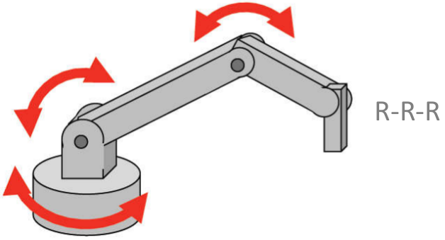

1 Conceptos Introductorios
\[ \newcommand{\vect}[1]{\boldsymbol{#1}} \newcommand{\x}{\vect{x}} \newcommand{\y}{\vect{y}} \newcommand{\z}{\vect{z}} \newcommand{\e}{\vect{e}} \newcommand{\f}{\vect{f}} \newcommand{\g}{\vect{g}} \newcommand{\G}{\vect{G}} \newcommand{\h}{\vect{h}} \newcommand{\J}{\vect{J}} \newcommand{\n}{\vect{n}} \newcommand{\p}{\vect{p}} \newcommand{\q}{\vect{q}} \newcommand{\s}{\vect{s}} \newcommand{\w}{\vect{w}} \newcommand{\m}{\vect{m}} \renewcommand{\a}{\vect{a}} \renewcommand{\b}{\vect{b}} \renewcommand{\c}{\vect{c}} \renewcommand{\d}{\vect{d}} \renewcommand{\r}{\vect{r}} \renewcommand{\u}{\vect{u}} \renewcommand{\v}{\vect{v}} % Problems? \newcommand{\vv}{\vect{v}} \newcommand{\rr}{\vect{r}} \newcommand{\bv}{\vect{v}} \] \[ \newcommand{\vi}{\vect{i}} \newcommand{\vj}{\vect{j}} \newcommand{\vk}{\vect{k}} \] \[ \newcommand{\bomega}{\vect{\omega}} \newcommand{\bphi}{\vect{\phi}} \newcommand{\bepsilon}{\vect{\epsilon}} \newcommand{\btheta}{\vect{\theta}} \newcommand{\btau}{\vect{\tau}} \newcommand{\bmu}{\vect{\mu}} \newcommand{\bvarphi}{\vect{\varphi}} \newcommand{\bxi}{\vect{\xi}} \] \[ \newcommand{\zeros}{\vect{0}} \] \[ \newcommand{\dq}{\dot {\vect{q}}} \newcommand{\ddq}{\ddot {\vect{q}}} \newcommand{\dx}{\dot {\vect{x}}} \newcommand{\ddx}{\ddot {\vect{x}}} \] \[ \newcommand{\Ja}{{J_{_{\!A}}}} \]
\[ \newcommand{\half}{\frac{1}{2}} \newcommand{\quarter}{\frac{1}{4}} \]
\[ \newcommand{\bm}[1]{\begin{bmatrix}#1\end{bmatrix}} \newcommand{\mat}[1]{\boldsymbol{#1}} \newcommand{\Rot}{\mat{R}} \newcommand{\Tran}{\mat{T}} \newcommand{\tr}{\text{tr}} % For trace \]
\[ \newcommand{\R}{\mathbb{R}} \newcommand{\dt}{\Delta t} \] \[ \renewcommand{\frame}[1]{\{\mathcal{#1}\}} \]
Un robot es un sistema complejo formado por diversos componentes mecánicos y electrónicos, así como por componentes computacionales, y su modelamiento completo implica el modelo de todos estos componentes físicos. Sin embargo, con fines de generación de movimiento, un robot suele ser modelado como un conjunto de cuerpos rígidos unidos mediante articulaciones. Este capítulo presenta algunos conceptos elementales relacionados tanto con los cuerpos rígidos que lo conforman, como con las articulaciones que unen dichos cuerpos rígidos. Se presenta, además, algunos conceptos relacionados con los grados de libertad de un robot, y los espacios que se utiliza para describir la configuración y las tareas que realiza un robot.
1.1 Cuerpo Rígido
Una de las características principales de un robot es el poseer partes que pueden realizar diversos tipos de movimientos. Por ejemplo, la garra de un robot manipulador puede desplazarse hacia arriba o hacia abajo a través del movimiento coordinado de las partes que conforman la estructura del manipulador, llamadas eslabones. De igual manera, un robot cuadrúpedo puede desplazarse de un punto a otro a través del movimiento de sus patas, las cuales son parte de su estructura. En robótica, cada una de estas partes en movimiento es usualmente rígida y se modela como un cuerpo rígido (la excepción son los llamados robots blandos, o en inglés soft robots, cuyas partes son deformables). En esta sección se introducirá conceptos básicos relacionados con cuerpos rígidos.
1.1.1 Definiciones
- Cuerpo Rígido
- Un cuerpo rígido es una colección de partículas con la propiedad que la distancia relativa entre todas las partículas permanece siempre constante. Esto es, si se tiene dos puntos cualesquiera en un cuerpo rígido, representados por los vectores posición \(\p_i\) y \(\p_j\) como se muestra en la Figura 1.1, estos deben satisfacer la siguiente relación: \[ \Vert \p_i(0) - \p_j(0) \Vert = \Vert \p_i(t) - \p_j(t) \Vert \] donde \(t\) indica un tiempo arbitrario y \(\Vert . \Vert\) representa la norma \(L\)-2 de un vector. Así, sea cual fuere el movimiento del cuerpo rígido, la distancia entre los puntos de este cuerpo permanece fija todo el tiempo.
- Movimiento Rígido
- Sea un objeto descrito como un subconjunto \(\mathcal{O} \subset \R^3\) del espacio tridimensional. Un movimiento rígido del objeto \(\mathcal O\) es un movimiento continuo durante el cual \(\mathcal O\) se comporta como un cuerpo rígido; es decir, la distancia entre dos partículas cualesquiera del objeto permanece constante durante todo el movimiento. Matemáticamente, un movimiento rígido puede ser representado por una familia continua de mapas \(\g(t)\) que describen cómo se mueve el objeto en el espacio: \[ \g(t):\mathcal{O} \rightarrow \R^3. \] Si el objeto se mueve a lo largo de una trayectoria continua, \(\g(t)\) mapea las coordenadas iniciales de un punto en el cuerpo a las coordenadas del mismo punto en el cuerpo pero en un tiempo \(t\) posterior.
- Desplazamiento Rígido
- Un desplazamiento rígido de un objeto \(\mathcal O\) es el cambio de una locación inicial a una locación final de dicho objeto mediante un movimiento rígido. En términos matemáticos, un desplazamiento rígido mapea los puntos de un cuerpo rígido de su configuración inicial a su configuración final mediante un único mapa \(g\), donde \[ \g:\mathcal{O} \rightarrow \R^3. \] Dado un vector libre \(\vv=\p_i-\p_j\) con \(\p_i,\p_j \in \R^3\), el efecto de un desplazamiento rígido en el vector \(\vv\) se representa por el mapa \(\overline{\g}\) tal que \[ \overline{\g}(\vv)=\g(\p_i)-\g(\p_j). \] Resulta común denominar \(\overline{\g}\) al mapa que actúa sobre vectores y \(\g\) al mapa correspondiente que actúa sobre puntos. En general, un desplazamiento rígido está compuesto por rotaciones y traslaciones de un objeto rígido, como se verá más adelante, en el capítulo~\(\ref{ch:representaciones-cuerpos-rigidos}\).
- Cuerpo Rígido Espacial y Planar
- Según el entorno donde se realiza el movimiento, es conveniente distinguir entre los siguientes dos tipos de cuerpos rígidos.
- Cuerpo rígido espacial. Es un cuerpo rígido cuyo movimiento se realiza en el espacio de 3 dimensiones. Un ejemplo es la estructura mecánica de un robot móvil aéreo, tal como un quadcópter.
- Cuerpo rígido planar. Es un cuerpo rígido cuyo movimiento está restringido a un plano bidimensional. Un ejemplo es el chasis de un robot móvil terrestre con ruedas que se desplaza sobre una superficie horizontal lisa.
- Configuración de un Cuerpo Rígido
- De manera general, una configuración es un conjunto de parámetros que permiten determinar dónde se encuentra un cuerpo rígido. Dado que un cuerpo rígido está compuesto por un conjunto de puntos o partículas, la configuración es la especificación de la posición de cada uno de estos puntos. De manera equivalente, si se considera al cuerpo rígido como un todo, su configuración está dada por los parámetros que representan su posición y orientación, siempre que la forma del cuerpo rígido sea conocida (la forma es necesaria para conocer dónde se encuentran todos los puntos que lo conforman).
1.1.2 Grados de Libertad de un Cuerpo Rígido
La configuración de un cuerpo rígido está representada por un conjunto de parámetros. Se denomina grado de libertad (gdl) de un cuerpo rígido al mínimo número de parámetros necesarios para representar la configuración del cuerpo rígido. De manera equivalente, se puede decir que el grado de libertad es el número de parámetros independientes que se requiere para representar la configuración de un cuerpo rígido. Por ejemplo, un cuerpo rígido en el plano tiene tres grados de libertad, ya que para especificar dónde se encuentra el cuerpo se requiere por lo menos tres elementos: dos para su posición (\(x,y\)), y uno para su orientación (\(\theta\)). Por otro lado, un cuerpo rígido en el espacio tiene seis grados de libertad ya que se requiere tres parámetros para representar su posición, y tres parámetros para representar su orientación.
Es importante tener en cuenta que cuando el movimiento de un cuerpo rígido se encuentra restringido, sus grados de libertad disminuyen; es decir, se requiere menos parámetros para saber dónde se encuentra el cuerpo debido a la restricción. Debido a esto, se debe considerar que el número de grados de libertad no es necesariamente igual a la dimensión del espacio en el cual se encuentra el cuerpo rígido. Por ejemplo, la configuración de un punto sobre una esfera tridimensional tiene solamente 2 grados de libertad ya que, a pesar de que se podrían utilizar 3 coordenadas para su representación, solo dos (correspondientes a la latitud y a la longitud) son necesarias, pues la forma de la esfera restringe el movimiento. Por esta consideración, los grados de libertad también indican la cantidad de movimientos independientes que tiene un cuerpo rígido.
1.1.3 Mecanismos
Los cuerpos rígidos son importantes debido a que cuando se encuentran unidos a través de articulaciones permiten el movimiento estructurado de cada una de sus partes y así dan lugar a los mecanismos. Un mecanismo es un sistema mecánico que realiza cierto movimiento y está compuesto por dos elementos principales: cuerpos rígidos y articulaciones que los enlazan. Los cuerpos rígidos que conforman un mecanismo son usualmente llamados eslabones (links, en inglés), y las articulaciones (joints, en inglés) también son denominadas ejes, junturas, o juntas. Desde un punto de vista puramente mecánico, un robot es un ejemplo de mecanismo.
- Cadena Cinemática
- A una secuencia de eslabones y articulaciones, en algún orden, se le denomina cadena cinemática; por tanto, los mecanismos están formados por cadenas cinemáticas. Para un eslabón de una cadena cinemática, se define su grado de conexión (\(gdc\)) como el número de eslabones a los cuales se encuentra conectado mediante articulaciones. Por ejemplo, si un eslabón tiene en ambos extremos una articulación, y cada una de estas articulaciones está a su vez conectada a otro eslabón, se dice que su grado de conexión es dos, ya que está conectado a dos eslabones.
- Clasificación de Mecanismos
- Según la estructura que presentan las cadenas cinemáticas, los mecanismos se pueden clasificar de la siguiente manera.
Mecanismos de cadena abierta. Un mecanismo se denomina de cadena cinemática abierta cuando existe una sola secuencia de eslabones que conecta ambos extremos de la cadena. Esto significa que cada par de eslabones está conectado por una sola articulación, y la estructura de la cadena cinemática es una secuencia compuesta por eslabón - articulación - eslabón - articulación, etc.
De manera más formal, se dice que en una cadena cinemática abierta cada eslabón tiene un grado de conexión 2, excepto los eslabones de los extremos, llamados eslabón de base y eslabón final, los cuales tienen un grado de conexión 1. Los eslabones con \(gdc=2\) se denominan eslabones internos y se conectan, mediante las respectivas articulaciones, al eslabón anterior y al eslabón siguiente. El eslabón de base solo se conecta a un eslabón interno ya que por el otro lado se encuentra fijo en un soporte, y el eslabón final tiene uno de sus extremos libres.
Los robots que tienen cadena abierta se denominan robots seriales, y su estructura se esquematiza en la Figura 1.3 (a).
Mecanismos de cadena cerrada. Un mecanismo se dice que es de cadena cinemática cerrada cuando presenta bucles en su estructura; es decir, si se comienza en un eslabón y se sigue parte de la cadena cinemática en una sola dirección, existe por lo menos una manera diferente de regresar al mismo eslabón de partida. Como consecuencia, existe más de una secuencia de eslabones que conecta a ambos extremos de la cadena.
Las cadenas cinemáticas cerradas se pueden clasificar, a su vez, como cadenas cerradas simples y cadenas cerradas complejas. En el caso de las cadenas simples, todos los eslabones tienen grado de conexión 2, y por tanto solo existe un bucle en la estructura. Un ejemplo es el denominado mecanismo de cuatro barras, mostrado en la Figura 1.3 (b). Por otro lado, en las cadenas cerradas complejas al menos un eslabón (diferente del eslabón de la base) tiene \(gdc \geq 3\), lo cual implica que existen tres o más cadenas cinemáticas que unen la base con el eslabón final.
Los robots que presentan una cadena cinemática cerrada compleja se denominan robots paralelos. Un ejemplo de este tipo de robots se muestra en la Figura 1.3 (c).
1.2 Caracterización de un Robot
No existe una definición universalmente aceptada de lo que es un robot, y, más aún, las definiciones han variado con el tiempo, dado que los robots y sus capacidades también se han incrementado con el tiempo. De manera informal, se puede definir un robot como un mecanismo reprogramable que, con base en diversas mediciones obtenidas mediante de sus sensores, interactúa a través de acciones independientes e inteligentes con su entorno, realizando una variedad de tareas. El hecho de ser reprogramable lo diferencia de otros mecanismos creados para alguna actividad específica, y lo hacen versátil: un robot puede cambiar de tarea según sea necesario. Estas tareas para un robot manipulador consisten en agarrar objetos y trasladarlos entre dos puntos, realizar pintura, soldadura, etc., y en robots móviles consisten en desplazarse de un lugar a otro realizando exploración, búsqueda, etc. Idealmente, las acciones de un robot deben ser inteligentes o, mejor dicho, autónomas, de tal modo que el usuario solamente brinda tareas de alto nivel y el robot se encarga de todos los detalles del bajo nivel. Esta autonomía tiene como base el procesamiento de la información proporcionada por los sensores del robot acerca de su entorno. Por ejemplo, uno solo comanda a un robot a traer un objeto, y el robot autónomamente busca el objeto, lo identifica y lo trae, sin que uno mencione explícitamente dónde se encuentra el objeto, cómo agarrarlo, qué velocidades aplicar a los motores, entre otros detalles.
Para poder lograr toda esta sinergia, un robot está constituido por diversas partes mecánicas, electrónicas y computacionales. Esta sección introduce de forma general las partes que constituyen un robot, así como algunos conceptos mecánicos aplicados a la robótica.
1.2.1 Partes de un Robot
El funcionamiento de un robot normalmente tiene como entrada la especificación de una o más tareas por parte de un usuario. Estas tareas pueden tener distintos niveles de complejidad, siendo por ejemplo referencias específicas para los motores, o tareas de más alto nivel como traer un objeto. Para poder satisfacer estas instrucciones, el robot ejecuta ciertas acciones sobre su entorno, las cuales normalmente implican algún tipo de movimiento, como mover el efector final para agarrar un objeto, o desplazarse de un lugar a otro. Tanto las instrucciones como las acciones, que son entradas y salidas del sistema robótico, requieren de subsistemas que sean capaces de interpretarlas y generarlas apropiadamente. Estos subsistemas son de tipo mecánico, electrónico y computacional, por lo que un robot es considerado como un sistema mecatrónico. La Figura 1.4 muestra de manera esquemática estos subsistemas, así como las entradas y salidas del sistema completo.
A continuación se brinda una breve descripción de los sub-sistemas que conforman un robot genérico, que podría ser un robot manipulador o un robot móvil.
Sub-sistema mecánico. Este subsistema es también conocido como la estructura mecánica del robot y está compuesto por eslabones usualmente rígidos conectados a través de articulaciones, las cuales permiten el movimiento. Así, como se mencionó en la Sección 1.1.3, mecánicamente un robot es un mecanismo. Por ejemplo, un robot manipulador como el mostrado en la Figura 1.5 tiene una base (que se suele considerar como el eslabón 0 y que va fijo sobre alguna superficie), eslabones, y un efector final también llamado órgano terminal. En el ejemplo mostrado, este efector final es una mano de tres dedos, pero podría ser cualquier otro elemento que le permita al manipulador ejecutar su tarea, como una garra o alguna herramienta específica. Para robots móviles, la estructura mecánica está formada por el soporte, dado por el chasis, y por elementos que son necesarios para el movimiento del robot. Por ejemplo, en robots terrestres pueden ser las ruedas, usualmente modeladas como cuerpos rígidos a pesar de tener cierta flexibilidad, y en robots aéreos pueden ser las hélices.
Sub-sistema de sensado. Este subsistema se encarga de obtener información externa o interna del robot a través de sensores. Los sensores que obtienen información del estado interno del robot, como por ejemplo la posición de las articulaciones o la orientación del robot, son denominados sensores propioceptivos. Por otro lado, los sensores que brindan información externa del entorno que rodea al robot, como sensores de fuerza-torque, sensores de proximidad, diversos tipos de cámaras, son denominados sensores exteroceptivos. En algunos casos, algunos sensores podrían caer en ambos grupos dependiendo de qué es lo que miden. Se debe considerar que este subsistema tiene normalmente una fabricación basada en principios electro-mecánicos pero la información es recuperada de manera electrónica.
Sub-sistema de actuación. Este subsistema genera movimiento para el robot y está compuesto por actuadores, los cuales son usualmente motores en robótica. Estos motores pueden clasificarse como eléctricos, hidráulicos o neumáticos, según el tipo de energía que utilicen para generar movimiento. El subsistema de actuación también incluye la forma en la que el movimiento se transmite desde los motores hacia los ejes mismos de un robot, a través de transmisiones mecánicas como fajas o engranajes.
Sub-sistema de control. Es el subsistema encargado de generar los comandos que determinan las acciones del robot, y por analogía con el ser humano se le suele denominar el cerebro del robot. Este subsistema tiene dos niveles: el bajo nivel y el alto nivel. El control de bajo nivel genera señales para controlar directamente al sub-sistema de actuación, e incluye diversos algoritmos de control de motores. El control de alto nivel asume que ya existen controladores de bajo nivel, y se enfoca en controlar tareas especificadas desde un punto de vista más alto, a través del planeamiento de trayectorias, aprendizaje por reforzamiento, optimización de trayectorias en el espacio operacional, entre otras.
1.2.2 Modelamiento Mecánico de un Robot
Un robot puede ser modelado con distintos niveles de complejidad, desde el modelo más simple hasta el más detallado, dependiendo del objetivo de modelamiento. Para un análisis cinemático y dinámico básico basta con especificar la estructura mecánica del robot que genera movimiento, ya que lo importante es establecer relaciones entre los componentes que generan el movimiento, y la posición u orientación de algún punto como el efector final. Desde este punto de vista, un robot está constituido mecánicamente por dos componentes principales:
- Eslabones. Son cuerpos rígidos que conforman la estructura mecánica de un robot, y se encuentran unidos unos a otros a través de articulaciones. Para el modelamiento de un eslabón es importante conocer variables físicas como su dimensión, masa, tensor de inercia y centro de masa. Otras características mecánicas, como la rigidez, no son tomadas en cuenta en el modelamiento, pero sí son importantes para el diseño, de tal modo que cada eslabón sea capaz de soportar toda la estructura mecánica.
- Articulaciones. También se denominan ejes, junturas, o juntas y son los componentes que permiten el movimiento relativo entre dos eslabones. Este movimiento es posible gracias a las fuerzas o torques que brindan los actuadores, que pueden estar localizados sobre el eje de movimiento articular, o a una cierta distancia. En el segundo caso es necesario incluir el efecto de la transmisión en un análisis dinámico. En robótica las articulaciones son usualmente de dos tipos: de revolución, o prismáticas.
Usando estos dos componentes básicos, un robot es comúnmente representado o modelado como una cadena cinemática de eslabones conectados mediante articulaciones, como se esquematiza en la Figura 1.6. Este modelo será el más utilizado no solo en este capítulo sino en los correspondientes a la cinemática y dinámica. Al final de la cadena cinemática de un robot manipulador se coloca usualmente un efector final que le permite al robot realizar una tarea determinada, como agarrar objetos.
1.2.3 Articulaciones
Una articulación es una conexión entre dos eslabones que restringe el movimiento de uno de ellos con respecto al otro. Esta restricción de movimiento reduce el número de grados de libertad del eslabón con respecto al número que tendría si estuviese libre en el espacio o en el plano. A pesar de dicha reducción, la articulación permite ciertos tipos controlados de movimiento entre los eslabones. Por este motivo, y de manera equivalente, se puede decir que una articulación provee movimiento a un eslabón con respecto a otro.
Debido a la relación inherente de una articulación con el movimiento de un eslabón, se define el número de grados de libertad de una articulación como el número de movimientos independientes que tiene un eslabón con respecto a otro cuando ambos están unidos mediante dicha articulación. Es decir, es el número de movimientos independientes que permite la articulación. Por ejemplo, una articulación de traslación, que tiene un grado de libertad, solo permite el desplazamiento en un eje de un eslabón con respecto a otro, restringiendo todos los demás desplazamientos (en los otros dos ejes) y todas las posibles rotaciones relativas.
- Articulaciones más usadas en Robótica
- La gran mayoría de robots existentes actualmente, tanto industriales como de investigación, utilizan principalmente dos tipos de articulaciones: prismáticas y de revolución. A continuación se realiza una breve descripción de estas articulaciones.
Articulación prismática (P). También es denominada articulación lineal, de deslizamiento, o de traslación, ya que permite la traslación de un eslabón en la dirección del eje de la articulación. Cada una de estas articulaciones posee un solo eje y, por tanto, un solo grado de libertad, ya que restringe el movimiento a la traslación sobre dicho eje. De manera equivalente, se puede decir que impone 5 restricciones al movimiento espacial, o 2 restricciones al movimiento planar. Un esquema de esta articulación, así como la simbología que se suele utilizar para su representación se muestra en la Figura 1.7.
Figura 1.7: Articulación prismática y su representación Articulación de revolución (R). En algunos casos se denomina articulación de giro o de rotación, ya que permite la rotación de un eslabón alrededor del eje de la articulación. Cada articulación tiene un solo eje de rotación, por lo que provee un solo grado de libertad al movimiento. Equivalentemente, impone 5 restricciones al movimiento espacial, o 2 al movimiento planar. Un esquema de esta articulación junto con la simbología que es normalmente usada para su representación se presenta en la Figura 1.8.
Figura 1.8: Articulación de revolución y su representación
De estos dos tipos de articulación, la articulación de revolución es, de lejos, la más utilizada actualmente. La articulación prismática se emplea en algunas configuraciones clásicas de robots, como por ejemplo el robot SCARA o el manipulador Stanford, en mecanismos semejantes a los de una impresora 3D, en mecanismos que permiten la traslación vertical u horizontal del torso o parte de un robot, entre otras aplicaciones específicas.
- Otras Articulaciones
- Las siguientes son algunas articulaciones utilizadas con mucho menor frecuencia en robótica, pero que pueden ser útiles para diseños orientados a aplicaciones específicas.
Articulación Hélica. También es conocida como articulación de tipo tornillo, ya que permite la rotación y traslación simultánea, pero dependiente, alrededor del eje de la articulación. Debido a que tanto la rotación como la traslación son interdependientes (siempre que hay traslación también hay rotación, y viceversa), solamente provee un grado de libertad espacial. Equivalentemente, impone 5 restricciones espaciales al eslabón al cual está unido. El esquema de su funcionamiento se ilustra en la Figura 1.9.
Figura 1.9: Articulación hélica Articulación Cilíndrica. Es una articulación que permite la rotación y traslación simultánea e independiente alrededor del eje de la articulación. A diferencia de la articulación hélica, en este caso se puede realizar una traslación sin modificar la rotación, y viceversa, como se esquematiza en la Figura 1.10. Por este motivo provee 2 grados de libertad espaciales o, equivalentemente, impone 4 restricciones espaciales.
Figura 1.10: Articulación cilíndrica Articulación universal. Esta articulación está compuesta internamente por 2 articulaciones de revolución, dispuestas de tal modo que sus ejes son ortogonales y se intersectan, como se esquematiza en la Figura 1.11. Debido a que en realidad son dos articulaciones de revolución, provee 2 grados de libertad al movimiento espacial y, equivalentemente, impone 4 restricciones espaciales.
Figura 1.11: Articulación universal Articulación esférica. La articulación esférica tiene un mecanismo similar a una esfera dentro de un socket con envoltura esférica, como se ilustra en la Figura 1.12. Dicha esfera siempre mantiene su posición fija, pero su orientación es completamente libre, brindando 3 grados de libertad al movimiento espacial. De manera equivalente, impone 3 restricciones espaciales correspondientes al desplazamiento en los 3 ejes.
Figura 1.12: Articulación esférica
- Robots según sus Articulaciones
- Una forma de clasificar a los robots manipuladores consiste en agruparlos según el tipo de articulación que posean, y el orden en el que aparezcan dichas articulaciones. Cuando se usa esta clasificación no se considera las longitudes de los eslabones u otros detalles de tamaño o fuerza que pudiesen diferenciarlos. Para nombrar a los robots según sus articulaciones se utiliza la letra R, para una articulación de revolución, y la letra P para una articulación prismática. Por ejemplo, si la primera articulación de un robot es de revolución, la segunda es prismática, y la tercera es de revolución, este robot se denomina robot RPR. Se debe notar que el orden es muy importante, y que será muy diferente un robot RPR de un robot PRR o RRP.
Algunas configuraciones usuales de robots manipuladores, según su tipo de articulación, se muestran en la Figura 1.13 y son: robots cartesianos (con configuración PPP), robots cilíndricos (con configuración RPP), robots esféricos (con configuración RRP), robots antropomórficos (con configuración RRR), robots SCARA (con configuración RRP), entre otros.


1.2.4 Configuración y Grados de Libertad de un Robot
Debido a que un robot se considera como un conjunto de cuerpos rígidos, su configuración consiste en la especificación completa de cada cuerpo rígido que lo conforma. Esta especificación se da a través de la representación de la posición y orientación de cada eslabón del robot. Así, la configuración de un robot consiste en especificar la posición y orientación de cada uno de sus eslabones a través de un conjunto de parámetros.
- Restricciones
- Para representar un cuerpo rígido libre en el espacio, como se vio en la Sección 1.1.2, se requiere utilizar 6 parámetros, debido a que el cuerpo posee 6 grados de libertad. Sin embargo, en un robot estos cuerpos rígidos no se encuentran libres, sino en una cadena cinemática conectados mediante articulaciones, las cuales imponen restricciones al movimiento. Por ejemplo, una articulación de revolución solo permite el giro del eslabón alrededor de un eje; es decir, restringe 5 de los 6 grados de libertad que poseería el eslabón si estuviese libre en el espacio, dejándolo con un solo grado de libertad. Debido a estas restricciones, en un robot se requiere menos de 6 parámetros para la especificación completa de cada eslabón que lo conforma.
La gran mayoría de robots solamente posee articulaciones de revolución y articulaciones prismáticas. Ambas articulaciones, como se describe en la Sección 1.2.3, imponen 5 restricciones al movimiento de un eslabón, dejándolo con solamente 1 grado de libertad. De este modo, se suele necesitar solo un parámetro para representar la configuración de un eslabón: si el eslabón se encuentra unido a una articulación de revolución el parámetro es el ángulo de giro de la articulación, y si se encuentra unido a una articulación prismática el parámetro será el desplazamiento que presente la articulación. Por tanto, un robot con \(n\) articulaciones requiere \(n\) parámetros para la representación de su configuración, siempre que solo posea articulaciones prismáticas y de revolución.
- Espacio de Configuración
- Es el espacio \(n\)-dimensional que contiene todas las posibles configuraciones de un robot, de tal modo que la configuración de un robot se representa por un punto en este espacio. Se debe notar que el espacio de configuración varía de robot a robot, según la cantidad y el tipo de articulaciones que posea. Las características de este espacio se presentarán con más detalle en la sección~\(\ref{sec-espacio-configuracion}\).
- Grados de Libertad de un Robot
- El número de grados de libertad (gdl) de un robot es el número mínimo de parámetros necesarios para representar la configuración completa del robot. De igual manera, se puede definir como el número de parámetros independientes que se requiere para representar la configuración del robot.
Este número caracteriza de alguna manera la estructura de cada robot, y por ello en robótica es común referirse a los robots mediante el número de grados de libertad que poseen. Por ejemplo, se habla de un robot de 5 grados de libertad al referirse a un robot que posee 5 articulaciones prismáticas o de revolución; el robot Sawyer (de Rethink Robotics) tiene 7 articulaciones de revolución y es común referirse al mismo como un robot de 7 grados de libertad. Cada grado de libertad se asocia típicamente con una articulación, y constituye una variable articular.
Debido a que los grados de libertad se asocian con el número de parámetros necesarios para la configuración del robot, su cálculo requiere un análisis semejante al realizado para determinar la representación de la configuración. Es decir, se requiere sumar todos los grados de libertad que poseería cada eslabón en el espacio (si se trata de un robot espacial) o en el plano (si es un robot planar) y se resta el número total de restricciones que imponen las articulaciones, como se hizo en el Ejemplo 1.3. Para mecanismos más complejos, el número de grados de libertad se puede obtener, en general, a través de la fórmula de Grübler, la cual se presenta en la Sección 1.3.
1.3 Fórmula de Grübler
La fórmula de Grübler, también conocida como la fórmula de Chebychev-Grübler-Kutzbach, es un criterio que determina el número de grados de libertad o grados de mobilidad de una cadena cinemática. Se basa en el hecho que las articulaciones imponen restricciones al movimiento de los eslabones, reduciendo la libertad de movimiento que estos poseerían si estuviesen libres. Considerando que \(n_g\) representa el número de grados de libertad de un mecanismo, se puede decir que: \[ n_g = \sum \text{libertad de eslabones} - \sum \text{restricciones de articulaciones} \] donde la primera suma se realiza para todos los eslabones y la segunda para todas las articulaciones. La libertad de cada eslabón depende de si se encuentra en el espacio o en el plano: debido a que un eslabón es un cuerpo rígido, en el espacio posee 6 grados de libertad y en el plano 3 grados de libertad. Las restricciones de las articulaciones dependen de su tipo, y para el caso espacial se describen en la Sección 1.2.3. Por ejemplo, las articulaciones prismáticas y de revolución presentan cada una cinco restricciones espaciales, permitiendo solamente un movimiento relativo entre los eslabones a los cuales unen.
A partir de las sumatorias anteriores se puede obtener una expresión más concreta para el cálculo del número de grados de libertad. Considérese un mecanismo con \(N_{_L}\) eslabones, donde el componente rígido que permanece inamovible, llamado , también se considera como un eslabón. Cada uno de estos eslabones tendría \(m\) grados de libertad si se encontrase libre en el espacio. Si este mecanismo tiene además \(N_{_J}\) articulaciones y cada articulación \(k\) impone \(c_k\) restricciones al movimiento de los dos eslabones que une, el número de grados de libertad \(n_g\) del mecanismo será \[ n_g = m(N_{_L}-1) - \sum_{k=1}^{N_{_J}}c_k \] donde el primer término corresponde a la libertad de los eslabones, y el segundo término a las restricciones que imponen las articulaciones. En el primer término se resta uno a \(N_{_L}\) debido a que el valor de \(N_{_L}\) incluye la tierra, la cual permanece fija y no aporta ningún movimiento. Como se mencionó anteriormente, si el movimiento de los eslabones se realiza en el espacio tridimensional se tiene \(m=6\), y si se realiza en el plano se tiene \(m=3\). Como se vio en la Sección 1.2.3, cada eslabón impone ciertas restricciones pero equivalentemente permite cierto movimiento. Sea \(f_k\) la cantidad de movimientos independientes que permite la articulación \(k\)-ésima, de tal modo que \(f_k+c_k=m\). Utilizando \(f_k\) se puede reformular la anterior expresión como \[ n_g = m(N_{_L}-1) - \sum_{k=1}^{N_{_J}}(m-f_k). \] Debido a las propiedades de la sumatoria se cumple la igualdad \(\sum_{k=1}^{N_{_J}}m=mN_{_J}\). Reemplazando esta igualdad en la expresión anterior, y agrupando términos, se obtiene la como: \[ n_g = m (N_{_L}-1- N_{_J}) + \sum_{k=1}^{N_{J}}f_k. \tag{1.1}\] Esta fórmula brinda el número de grados de libertad \(n_g\) de un mecanismo. A veces, a esta cantidad también se le conoce como el grado de movilidad. La fórmula de Grübler dada en Ecuación 1.1 solo es válida si todas las restricciones impuestas por las articulaciones son independientes. Si al menos una restricción no es independiente, entonces la fórmula de Grübler no brinda el número exacto de grados de libertad del mecanismo sino solamente una cota inferior. Es importante recalcar que en Ecuación 1.1 se considera que cada articulación une solamente dos eslabones.
1.4 Espacio de Configuración
Como se definió en la Sección 1.2.4, el espacio de configuración, también llamado espacio \(\mathcal C\) (en inglés: \(\mathcal C\)-space), es un espacio de dimensión \(n\) que contiene todas las posibles configuraciones de un robot. La dimensión de este espacio es igual al número de grados de libertad que posee el robot: si un robot tiene \(n\) grados de libertad, la dimensión de su espacio de configuración será también \(n\). Por ejemplo, un robot RR como el analizado en el Ejemplo 1.3 tiene 2 grados de libertad y por tanto su espacio de configuración es de dimensión 2.
1.4.1 Topología del Espacio de Configuración
De manera informal, la topología del espacio de configuración se puede entender como la forma que este espacio posee. Sin mucha rigurosidad matemática, se puede además decir que un espacio que posee una topología definida se denomina un espacio topológico. Algunos espacios topológicos genéricos pero importantes en robótica son los siguientes:
El espacio Euclideano \(n\)-dimensional representado por \(\mathbb R^n\) o \(\mathbb E^n\). Por ejemplo, cuando \(n=2\) la forma de este espacio es un plano que se extiende hasta el infinito por los cuatro lados. La Figura 1.16 (a) esquematiza la topología de \(\mathbb R^3\). Se debe notar que para este espacio se cumple que \(\mathbb R^n \times \mathbb R^m = \mathbb R^{n+m}\).
El espacio \(n\)-dimensional de la superficie de una esfera, el cual se representa como \(\mathbb S^n\). Este espacio de dimensión \(n\) siempre se encuentra dentro de un espacio de dimensión \(n+1\). Cuando \(n=1\), el espacio \(\mathbb S^1\) tiene la forma de una circunferencia unitaria en el plano \(\mathbb R^2\), y los valores que especifican la posición a lo largo de esta circunferencia se encuentran en el intervalo \([0, 2\pi[\). Así, cualquier valor angular se encuentra en \(\mathbb S^1\). Cuando \(n=2\), el espacio \(\mathbb S^2\), el cual se muestra en la Figura 1.16 (b), tiene la forma de la superficie de una esfera en \(\mathbb R^3\).
El espacio \(n\)-dimensional de la superficie de un toroide, el cual se representa como \(\mathcal T^n\). Esta superficie se obtiene como el producto cartesiano de \(n\) superficies de una esfera; es decir \[ \mathbb T^n = \mathbb S^1 \times \cdots \times \mathbb S^1 ~~(n\text{ veces}) \] Por ejemplo, cuando \(n=2\) se tiene el toroide \(\mathbb T^2\), mostrado en la Figura 1.16 (c), el cual está compuesto por dos superficies de circunferencia (\(\mathbb T^2 = \mathbb S^1 \times \mathbb S^1\)), una a lo largo del toroide, y la otra en cada uno de los cortes perpendiculares que se podrían realizar. Es importante notar un toroide \(T^n\) se encuentra siempre contenido en un espacio de dimensión \(n+1\).
- Topología de las Articulaciones
- Las dos articulaciones más utilizadas en robótica son la articulación de revolución y la articulación prismática. A continuación se presenta la topología de estas dos articulaciones.
- Articulaciones prismáticas. Cada articulación prismática se describe por un desplazamiento lineal \(\q \in \R\) a lo largo de un eje direccional. Por este motivo, la topología de una articulación prismática está dada por la recta \(\mathbb R^1\).
- Articulaciones de revolución. Una articulación de revolución se encuentra descrita mediante una variable angular, la cual se representa como el ángulo \(q \in \mathbb S^1\), donde \(S^1\) contiene los valores \([0,2\pi[\). Todos los ángulos se miden usando un sistema coordenado dextrógiro, de tal modo que un ángulo alrededor de un eje es positivo si representa una rotación en sentido horario cuando es vista desde la dirección del eje. Así, la topología de una articulación de revolución es \(S^1\).
La topología de la configuración de un robot manipulador se puede determinar como el producto cartesiano de la topología de cada una de sus articulaciones. En el caso de un robot móvil, su topología incluirá la topología de la configuración del espacio en el que se mueven.
1.4.2 Espacio Articular
En un robot manipulador basta con especificar el valor de todas las articulaciones para que la configuración del mismo quede completamente definida. Estos valores articulares especifican indirectamente la localización espacial de todos los eslabones del robot. Por este motivo, en el caso de los robots manipuladores es común denominar espacio articular \(\mathcal Q\) a su espacio de configuración. Considerando que la articulación \(i\)-ésima de un robot se representa como \(q_i\), el vector de variables articulares, que contiene todos los valores de las articulaciones del robot, se representa como \[ \q=\bm{q_1 & q_1 & q_3 & \cdots & q_n}^T, \] asumiendo que el robot posee \(n\) articulaciones. El vector \(\q \in \mathcal Q\) es a veces denominado vector de configuración articular del robot y representa cada elemento de su espacio articular.
El espacio articular \(\mathcal Q\) depende de la cantidad y del tipo de articulaciones que el robot posee. Por ejemplo, un robot de SCARA, cuya configuración articular es RRPR (considerando la orientación del efector final), tendrá como espacio articular a \(\mathcal Q = \mathbb S^1 \times \mathbb S^1 \times \mathbb R \times \mathbb S^1\), o equivalentemente a \(\mathcal Q = \mathbb T^2 \times \mathbb R \times \mathbb S^1\). Por otro lado, si un robot posee cuatro articulaciones, y todas son de revolución, su espacio articular estará dado por \(\mathcal Q = \mathbb S^1 \times \mathbb S^1 \times \mathbb S^1 \times \mathbb S^1\), que se puede representar de manera equivalente como \(\mathcal Q = \mathbb T^4\). En general, un robot con \(n\) grados de libertad cuyas articulaciones sean todas de revolución, tendrá un espacio articular dado por \(\mathcal Q = \mathbb T^n\).
Para robots móviles, su espacio de configuración está dado por su posición y orientación. De tratarse de robots móviles terrestres, tanto la posición como la orientación se encuentran en el plano y son tres valores que representan los tres grados de libertad planares. En el caso de robots móviles aéreos o submarinos, la posición y orientación deben describir los seis grados de libertad espaciales. La posición no suele ser un problema, pero sí lo es la representación de la orientación, la cual será descrita con mayor detalle en el capítulo~\(\ref{ch:representaciones-cuerpos-rigidos}\). Si un robot posee partes articuladas y una base móvil, como un robot cuadrúpedo o humanoide, su espacio articular consiste en la representación de la posición y orientación de algún punto del cuerpo llamado la base, y en la configuración articular. A veces esto suele ser denominado el espacio articular generalizado.
1.4.3 Representación del Espacio de Configuración
La representación del espacio de configuración es el conjunto de parámetros que describen de manera completa cualquier configuración. Por ejemplo, el espacio euclideano tridimensional puede ser representado utilizando coordenadas cartesianas (\(x,y,z\)), coordenadas esféricas (\(r, \theta, \varphi\)), o coordenadas cilíndricas. Por otro lado, la superficie de una esfera \(\mathbb S^2\) puede ser representada por dos coordenadas que son la latitud y la longitud (\(\varphi_{lat}, \varphi_{long}\)), o por un punto en tres dimensiones (\(x,y,z\)), notando que la última representación es redundante ya que la propia topología del espacio genera una restricción y por tanto solo requiere 2 variables mínimas para su representación. A partir de estos ejemplos es importante notar que la representación de cada espacio de configuración en general no es única y pueden existir múltiples representaciones para un mismo espacio.
- Singularidades de la Representación
- Las singularidades de la representación consisten en casos que no se encuentran bien definidos para una determinada representación. En otros términos, son casos mal condicionados. Por ejemplo, si se utiliza las coordenadas de latitud y longitud para representar a \(\mathbb S^2\), la longitud del mismo polo norte o del mismo polo sur no se encuentra bien representada ya que todas las longitudes convergen en estos puntos. Así, cualquier longitud puede ser asociada al polo norte o al polo sur, constituyéndose estos polos en singularidades de esta representación. Más aún, movimientos muy pequeños cerca al polo norte o al polo sur generan grandes variaciones en la longitud.
- Parametrizaciones
- A cada conjunto de parámetros utilizados para representar un espacio de configuración se le denomina una parametrización. Los principales tipos de parametrizaciones de un espacio de configuración son los siguientes:
Parametrizaciones explícitas. Para un espacio de dimensión \(n\), una parametrización explícita utiliza \(n\) parámetros para su representación. Por ejemplo, una parametrización explícita para el espacio Euclideano, cuya dimensión es tres, está dada por las coordenadas cartesianas \(x,y,z\), que son también tres. Asimismo, dado que el espacio \(\mathbb S^2\) es de dimensión dos, una parametrización explícita está dada por la latitud y la longitud, aunque esta parametrización presenta problemas de singularidades como se detalló anteriormente. En general, las parametrizaciones explícitas utilizan el número mínimo de parámetros, pero pueden llevar a problemas de singularidad en algunos casos.
Parametrizaciones implícitas. Para un espacio de dimensión \(n\), una parametrización implícita usa más de \(n\) parámetros para su representación, añadiendo restricciones entre los parámetros. Por ejemplo, una parametrización implícita de \(\mathbb S^2\), cuya dimensión es dos, está dada por las coordenadas cartesianas en el espacio \((x,y,z)\), añadiendo la restricción \(x^2+y^2+z^2=r\) que indica que todos los puntos deben estar en la superficie de la circunferencia. La ventaja de utilizar este tipo de parametrizaciones es que evitan las singularidades de la representación.
Debido a que normalmente existe más de una forma de representar un espacio, la parametrización que se utilice dependerá de cada caso particular.
1.5 Espacio Operacional
El espacio operacional, también denominado espacio de la tarea, es un espacio en el cual se puede expresar de manera natural cada una de las tareas que un robot debe realizar. A diferencia del espacio de configuración, el espacio operacional solamente describe la tarea para alguna parte del robot, pero no describe, en general, la configuración completa del robot. Por ejemplo, el espacio operacional puede describir las posiciones que el efector final de un robot debe seguir, sin tomar en cuenta lo que debe hacer el resto del robot ni los valores articulares del mismo. Un concepto útil para describir los espacios operacionales más utilizados es el de un punto operacional, en cuyo caso el espacio operacional suele ser denominado espacio cartesiano.
- Punto Operacional
- En un robot, un punto operacional es un punto de interés que se encuentra fijo en alguna parte de un eslabón, o que se mueve de manera solidaria con este. La importancia de un punto operacional es que, en general, cada tarea que define el movimiento de un robot normalmente se encuentra asociada a uno de estos puntos. Para el caso de un manipulador tradicional, su único punto operacional suele ser denominado efector final. Los robots manipuladores redundantes (con más de seis grados de libertad) suelen además considerar al codo como un punto operacional ya que, debido a la redundancia, este presenta cierto movimiento independiente del efector final. En robots de más grados de libertad como, por ejemplo, un robot humanoide, los puntos operacionales podrían ser las manos, los tobillos, la cintura, el pecho, la cabeza, entre otras partes de interés.
- Espacio Cartesiano
- El espacio cartesiano, también denominado espacio euclideano, es el espacio operacional que contiene todas las configuraciones de un punto operacional, y se encuentra conformado por la posición y orientación del mismo. Considerando que se asocia un sistema de referencia \(\frame B\) a un punto operacional llamado \(b\), el espacio cartesiano asociado a dicho punto se puede, en general, representar como \[ \x_b=\bm{x & y & z & \alpha & \beta &\gamma}^T \] donde las coordenadas \((x,y,z)\) describen la posición de \(\frame B\), y los parámetros \((\alpha, \beta, \gamma)\) describen su orientación. Sin embargo, debe tenerse en cuenta que el espacio cartesiano depende de la tarea, por lo que los seis elementos mostrados no siempre son todos usados. Por ejemplo, si la tarea solo implica la posición del punto operacional, entonces solo se utilizará las coordenadas correspondientes a la posición. El espacio cartesiano constituye la forma más utilizada del espacio operacional para la descripción de las tareas de un robot.